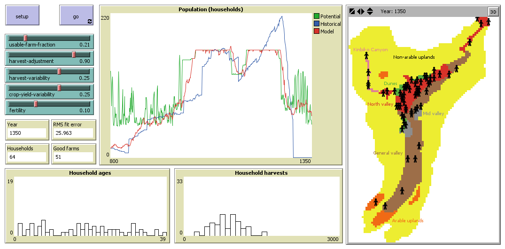
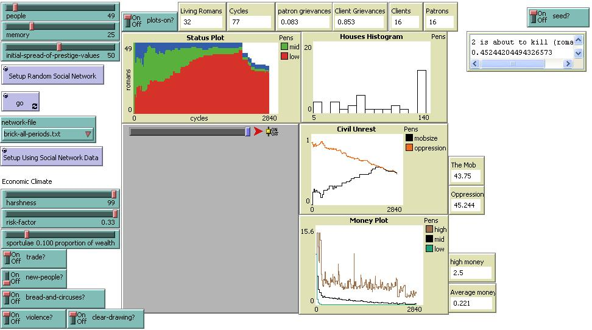
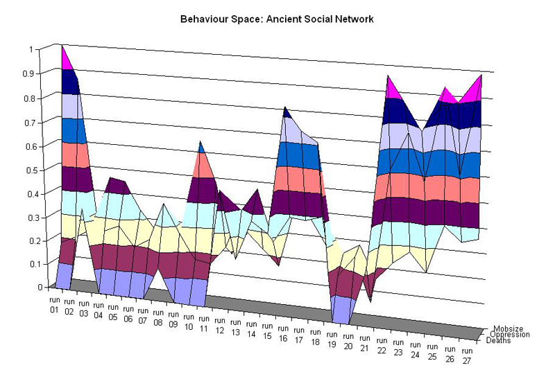

<!DOCTYPE html>
<html lang="en">
  <head>
    <meta charset="utf-8" />
    <meta name="viewport" content="width=device-width, initial-scale=1.0, maximum-scale=1.0, user-scalable=no" />

    <title></title>
    <link rel="stylesheet" href="dist/reveal.css" />
    <link rel="stylesheet" href="dist/theme/night.css" id="theme" />
    <link rel="stylesheet" href="plugin/highlight/zenburn.css" />
	<link rel="stylesheet" href="css/layout.css" />
	<link rel="stylesheet" href="plugin/customcontrols/style.css">


    <script defer src="dist/fontawesome/all.min.js"></script>

	<script type="text/javascript">
		var forgetPop = true;
		function onPopState(event) {
			if(forgetPop){
				forgetPop = false;
			} else {
				parent.postMessage(event.target.location.href, "app://obsidian.md");
			}
        }
		window.onpopstate = onPopState;
		window.onmessage = event => {
			if(event.data == "reload"){
				window.document.location.reload();
			}
			forgetPop = true;
		}

		function fitElements(){
			const itemsToFit = document.getElementsByClassName('fitText');
			for (const item in itemsToFit) {
				if (Object.hasOwnProperty.call(itemsToFit, item)) {
					var element = itemsToFit[item];
					fitElement(element,1, 1000);
					element.classList.remove('fitText');
				}
			}
		}

		function fitElement(element, start, end){

			let size = (end + start) / 2;
			element.style.fontSize = `${size}px`;

			if(Math.abs(start - end) < 1){
				while(element.scrollHeight > element.offsetHeight){
					size--;
					element.style.fontSize = `${size}px`;
				}
				return;
			}

			if(element.scrollHeight > element.offsetHeight){
				fitElement(element, start, size);
			} else {
				fitElement(element, size, end);
			}		
		}


		document.onreadystatechange = () => {
			fitElements();
			if (document.readyState === 'complete') {
				if (window.location.href.indexOf("?export") != -1){
					parent.postMessage(event.target.location.href, "app://obsidian.md");
				}
				if (window.location.href.indexOf("print-pdf") != -1){
					let stateCheck = setInterval(() => {
						clearInterval(stateCheck);
						window.print();
					}, 250);
				}
			}
	};


        </script>
  </head>
  <body>
    <div class="reveal">
      <div class="slides"><section  data-markdown><script type="text/template">

<!-- .slide: class="drop" data-background-opacity="0.75" data-background-size="contain" data-background-image="slideshows/practical-necromancy.png" -->


<div class="reset-margin" style="padding: 20px; box-sizing: border-box; position: absolute; left: 480px; top: 525px; height: 175px; min-height: 175px; width: 480px; display: flex; flex-direction: column; align-items: center; justify-content: space-evenly" >

<div align="right">

### Practical Digital Necromancy

<small>Shawn Graham, @electricarchaeo, Carleton U<br>shorturl.at/itvCO</small>

</div></div>

<aside class="notes"><p>30-40 minutes, questions to 50 minutes. so aim for 10 - 15 slides max. 
original blurb by the guy- Professor Graham of the Department of History at Carleton will take you through a bit of the deep history of divination, necromancy, and talking with the dead and then consider modern simulation technologies as a form of divination in the same mold; and then discuss how we can use this power for good instead of evil, of how it fits into the oft-quote digital humanities ethos of ‘hacking as a way of knowing’ and how to generate a probabilistic historiography through this technique.</p>
</aside></script></section><section  data-markdown><script type="text/template">
<!-- .slide: class="drop" data-background-size="contain" data-background-image="slideshows/broken-bridge.png" -->

<div class="reset-margin" style="padding: 20px; box-sizing: border-box; position: absolute; left: 480px; top: 525px; height: 175px; min-height: 175px; width: 480px; display: flex; flex-direction: column; align-items: center; justify-content: space-evenly" >

<div align="right">
Archaeology has a problem.
</div></div>

<aside class="notes"><p>the distance between what we find, and what we would like to say</p>
</aside></script></section><section  data-markdown><script type="text/template">
<!-- .slide: class="drop" data-background-size="contain" data-background-image="slideshows/broken-bridge.png" -->

# cross that gap

<div class="reset-margin" style="padding: 20px; box-sizing: border-box; position: absolute; left: 0px; top: 693px; height: 7px; min-height: 7px; width: 672px; display: flex; flex-direction: column; align-items: center; justify-content: space-evenly" >

<div align="left">

- a potted history of divination
- predicting the past v. predicting the future
- how I use ABM to create probabilistic historiographies

</div></div>
</script></section><section  data-markdown><script type="text/template">
<!-- .slide: data-background-size="contain" data-background-image="slideshows/priest-of-rome.png" -->

<br><br><br><br><br><br><bR><br><br><br><br><div align="right" style="background-color:rgba(255,255,255,0.5)"> Augury </div>

<aside class="notes"><p>Rome - 
priests: they read the signs, they observe the portents, passive 
magicians: they drag the spirits out to get them to reveal the future</p>
<p>priests good, magicians bad</p>
<p>Games &amp; Simulations as Purification</p>
<ul>
<li>Etruscan Games</li>
<li>Roman Spectacles of Death</li>
</ul>
<p>celebrate being alive, but through representation, they control the things that are dangerous</p>
</aside></script></section><section  data-markdown><script type="text/template">
<!-- .slide: data-background-size="contain" data-background-image="slideshows/delphi.png" -->

<br><br><br><br><br><br><bR><br><br><br><br><div align="right" style="background-color:rgba(255,255,255,0.5)"> Delphi </div>

<aside class="notes"><p>Oracles and Riddles</p>
<ul>
<li>they describe a world</li>
<li>they are something to be solved</li>
<li>the present challenge &amp; difficulty</li>
<li>they join representaiton with puzzle</li>
</ul>
<p>Games, riddles, oracles represent the world, control the world, explore the world</p>
</aside></script></section><section  data-markdown><script type="text/template">
<!-- .slide: class="drop" data-background-size="contain" data-background-image="slideshows/necromancer-calls-spirits.png" -->

<div class="reset-margin" style="padding: 20px; box-sizing: border-box; position: absolute; left: 0px; top: 0px; height: 7px; min-height: 7px; width: 480px; display: flex; flex-direction: column; align-items: center; justify-content: space-evenly" >

<div align="left">
Why Raising The Dead Is Usually Frowned Upon
</div></div>


<aside class="notes"><p>Raising the dead - necromancy, divination - guidance</p>
<ul>
<li>elaborate rituals</li>
<li>the only advice the dead can give is a function of what they knew when alive</li>
<li>variations widespread around the world
Odysseus travels to the underworld to consult Tiresias; uses spells taught to him by circe, ritual</li>
<li>King Saul consults the Witch of Endor to rase the spirit of Samuel</li>
<li>strabo describes</li>
</ul>
</aside></script></section><section  data-markdown><script type="text/template"><!-- .slide: data-background-size="contain" data-background-image="slideshows/necromancer-calls-spirits.png" -->

<br><br><br><br><br><br><bR><br><br><br><br><div align="right" style="background-color:rgba(255,255,255,0.5)"> Necromancers don't wait for revelation. They _compell._ </div>

<aside class="notes"><p>Necromancy</p>
<ul>
<li>is about trying to control the future</li>
<li>element of compulsion marks it out as unholy</li>
</ul>
<p>With necromancy, we compel the dead to tell us what it is we want to know.</p>
<p>This is messy.</p>
<ul>
<li>in the 20th century, we turned to digital simulation to figure out how many people who die.</li>
</ul>
</aside></script></section><section  data-markdown><script type="text/template">
With *practical* necromancy, we build simulations of the dead, and watch what they do.
</script></section><section  data-markdown><script type="text/template">
<!-- .slide: data-background-size="contain" data-background-image="slideshows/gollems.png" -->


<aside class="notes"><p>I used to call these things &#39;zombies&#39;. Mindless monsters, no will of their own. But that&#39;s not right.</p>
<p>Raising the Dead: Zombies</p>
<ul>
<li>compelled labour after death</li>
</ul>
<p>Prefer &#39;Golems&#39;</p>
<ul>
<li>do what they&#39;re told</li>
</ul>
</aside></script></section><section  data-markdown><script type="text/template">
<split even>
<p style="line-height: 0" class="reset-paragraph image-paragraph"></img></p>

<p style="line-height: 0" class="reset-paragraph image-paragraph"></img></p>

</split>

How does agent modeling work?

<aside class="notes"><ul>
<li>create a population of heterogeneous digital golems</li>
<li>give them rules of behaviour drawn from the &#39;just so&#39; stories we tell</li>
<li>put them into an environment</li>
<li>allow them to interact &amp; interpret their rules according to their local situation</li>
<li>repeat ad nauseum, changing the starting conditions</li>
<li>map the history we know to have happened against the manufactured histories</li>
</ul>
</aside></script></section><section  data-markdown><script type="text/template">```
to go
  calculate-patch-yields
  annual-household-activities
    
  ask households [  ;; agents with insufficient food for next year try to find a new farm
    if (food-estimate < 1.1 * food-requirement) [
      ask patch-here [ set being-farmed? false ]
      find-best-farm potential-farms
    ]
  ]
  
  let farms potential-farms  ;; avoid recomputing this unnecessarily
  ask households [
    if (age >= fertility-age and age <= fertility-end-age and random-float 1 < fertility and count farms > 0) [ 
      do-reproduce farms
      set farms potential-farms
    ]
  ]
  
  plot-interesting-data
  if (year = 1350 or count households = 0) [ stop ]
  set year year + 1
  tick
end

to-report food-estimate  ;; estimate the amount of food available for next year, based on current stocks of corn, and an estimate of the future harvest
  let future-estimate harvest  ;; predict next year's harvest to be the same as this year's harvest
  report (future-estimate + sum (but-first corn-storage))  ;; ignore the corn on the front of the list, which is now too old to eat
end
```

</script></section><section  data-markdown><script type="text/template">
Roman Civil Violence

<split even>
<p style="line-height: 0" class="reset-paragraph image-paragraph"></img></p>

<p style="line-height: 0" class="reset-paragraph image-paragraph"></img></p>

</split>

Graham, S. (2009). Behaviour Space: Simulating Roman Social Life and Civil Violence. _Digital Studies/le Champ Numérique_, _1_(2). DOI: [http://doi.org/10.16995/dscn.109](http://doi.org/10.16995/dscn.109)

<aside class="notes"><p>lets me explore</p>
</aside></script></section><section  data-markdown><script type="text/template">
Reasons to raise the dead:
- forces you to *make explicit* what you believe about the past: if you can't encode it, you don't understand it
- makes your stories about the past *testable*: if the past really functioned this way, then we ought to see x, y, under conditions z
- opens your stories to interrogation: no one should believe your results if they can't see your code
</script></section><section  data-markdown><script type="text/template">
<!-- .slide: class="drop" data-background-size="contain" data-background-image="slideshows/archae-as-necro4.png" -->

<div class="reset-margin" style="padding: 20px; box-sizing: border-box; position: absolute; left: 480px; top: 525px; height: 175px; min-height: 175px; width: 480px; display: flex; flex-direction: column; align-items: center; justify-content: space-evenly" >

<div align="right">

Practical Necromancy Makes For Better Archaeology

</div></div>
</script></section><section  data-markdown><script type="text/template">
## Prompts for DALL-E

<small>

- An archaeologist at his computer. He is raising the dead through practical necromancy. artstation.
- a broken bridge; the central span is missing. A man looks across the gap in dismay. artstation.
- An ancient Roman necromancer calls forth the spirits from a cave along the seashore. artstation
- A priest in ancient Rome stands in front of the Temple of Jupiter Optimus Maximus and studies the flight of birds. artstation
- The Pythia upon her throne inside the Temple of Apollo at Delphi. artstation
- A group of golems, awaiting orders in the town square. art station.
- An archaeologist is also a necromancer who raises the dead to write history. artstation

</small></script></section></div>
    </div>

    <script src="dist/reveal.js"></script>

    <script src="plugin/markdown/markdown.js"></script>
    <script src="plugin/highlight/highlight.js"></script>
    <script src="plugin/zoom/zoom.js"></script>
    <script src="plugin/notes/notes.js"></script>
    <script src="plugin/math/math.js"></script>
	<script src="plugin/mermaid/mermaid.js"></script>
	<script src="plugin/chart/chart.min.js"></script>
	<script src="plugin/chart/plugin.js"></script>
	<script src="plugin/menu/menu.js"></script>
	<script src="plugin/customcontrols/plugin.js"></script>

    <script>
      function extend() {
        var target = {};
        for (var i = 0; i < arguments.length; i++) {
          var source = arguments[i];
          for (var key in source) {
            if (source.hasOwnProperty(key)) {
              target[key] = source[key];
            }
          }
        }
        return target;
      }

	  function isLight(color) {
		let hex = color.replace('#', '');

		// convert #fff => #ffffff
		if(hex.length == 3){
			hex = `${hex[0]}${hex[0]}${hex[1]}${hex[1]}${hex[2]}${hex[2]}`;
		}

		const c_r = parseInt(hex.substr(0, 2), 16);
		const c_g = parseInt(hex.substr(2, 2), 16);
		const c_b = parseInt(hex.substr(4, 2), 16);
		const brightness = ((c_r * 299) + (c_g * 587) + (c_b * 114)) / 1000;
		return brightness > 155;
	}

	var bgColor = getComputedStyle(document.documentElement).getPropertyValue('--r-background-color').trim();

	if(isLight(bgColor)){
		document.body.classList.add('has-light-background');
	} else {
		document.body.classList.add('has-dark-background');
	}

      // default options to init reveal.js
      var defaultOptions = {
        controls: true,
        progress: true,
        history: true,
        center: true,
        transition: 'default', // none/fade/slide/convex/concave/zoom
        plugins: [
          RevealMarkdown,
          RevealHighlight,
          RevealZoom,
          RevealNotes,
          RevealMath.MathJax3,
		  RevealMermaid,
		  RevealChart,
		  RevealCustomControls,
		  RevealMenu,
        ],

		mathjax3: {
			mathjax: 'plugin/math/mathjax/tex-mml-chtml.js',
		},

		customcontrols: {
			controls: [
				{id: 'toggle-overview',
				title: 'Toggle overview (O)',
				icon: '<i class="fa fa-th"></i>',
				action: 'Reveal.toggleOverview();'
				},
			]
		},
		menu: {
			loadIcons: false
		}
      };

      // options from URL query string
      var queryOptions = Reveal().getQueryHash() || {};

      var options = extend(defaultOptions, {"width":960,"height":700,"margin":0.04,"controls":true,"progress":true,"slideNumber":true,"transition":"slide","transitionSpeed":"default"}, queryOptions);
    </script>

    <script>
      Reveal.initialize(options);
    </script>
  </body>
</html>
